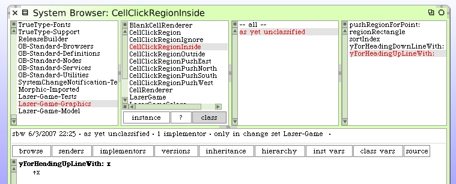
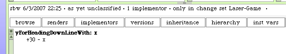
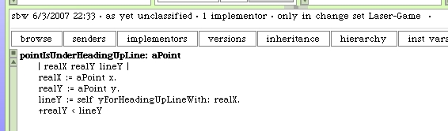
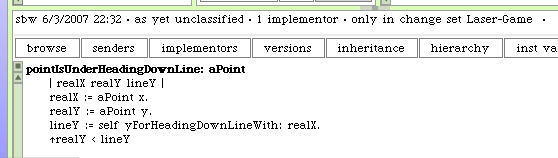
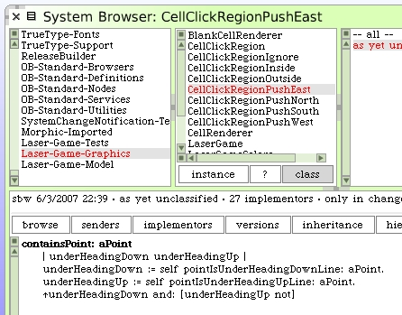
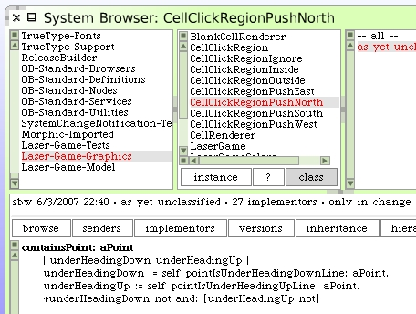
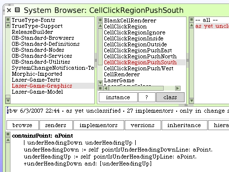
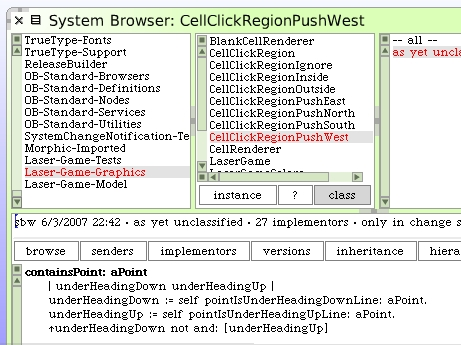

Back to the class CellClickRegionInside. Add a class method to calculate the "y" value for a given "x" value when using our "heading-up" line.
And a method for our "heading-down" line.
We can now add class methods to tell if a test point is under a specific line.

Last step is to have the 4 push region classes use these tests and the truth-table logic.


